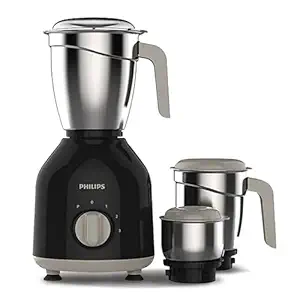
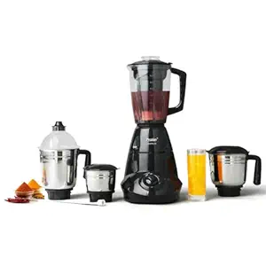
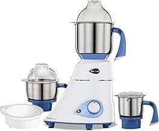
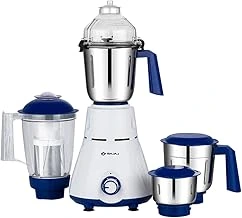

🔥 Top 5 Best Mixer Grinder Under ₹5000 (2026) — Powerful & Reliable Picks for Indian Kitchens

Top mixer grinders tested for grinding performance, motor power, durability, and value for Indian kitchens.
👉 Here are the 5 best mixer grinders under ₹5000 — researched, compared, and ranked for Indian buyers:
This page contains affiliate links. If you buy through these links, we may earn a small commission at no extra cost to you.
Why Trust Us?
- ✔ We research and compare real user reviews across Amazon & Flipkart
- ✔ We focus on value-for-money products for Indian buyers
- ✔ No paid placements — products are chosen based on performance
- ✔ We update our lists regularly based on latest prices & ratings
1. Philips HL7756/00 Mixer Grinder (Approx. ₹3,899) 🔥 Best Pick

⭐ Editor's Choice — Best overall mixer grinder for Indian kitchens
Why we picked it: The Philips HL7756/00 stands out as one of the most dependable mixer grinders under ₹5000 for Indian households. Its powerful 750W Turbo motor handles turmeric, dry spices, chutneys, onion-tomato gravies, and dosa batter with ease. Many users also appreciate its durable stainless steel jars, stable performance, and long-lasting reliability for daily Indian cooking. With a trusted Philips service network and solid warranty support, it offers excellent peace of mind for long-term use.
- ✔ Powerful 750W Turbo motor handles tough grinding efficiently
- ✔ Comes with 3 durable stainless steel jars for multiple kitchen tasks
- ✔ Leak-resistant jar lids with sturdy locking mechanism
- ✔ Fine grinding performance for masalas, chutneys, and batter
- ✔ Advanced air ventilation system helps reduce overheating
- ✔ 2-year product warranty with wide Philips service support in India
2. Prestige Iris Mixer Grinder (Approx. ₹3,249)

Why we picked it: The Prestige Iris is one of the best value-for-money mixer grinders for Indian homes that want both grinding and juicing features in a single appliance. Based on long-term buyer feedback and user reviews across shopping platforms and Reddit discussions, users especially like its powerful 750W motor, practical jar combination, and reliable daily performance for chutneys, masalas, dosa batter, shapes, and juice preparation.
- ✔ Powerful 750W motor handles tough grinding tasks with ease
- ✔ Includes 4 jars including stainless steel jars and separate juicer jar
- ✔ Wet and dry jars are useful for masalas, chutneys, batter, and smoothies
- ✔ Juicer attachment works well for occasional home juice preparation
- ✔ 2-year product warranty adds extra peace of mind for daily use
- ✔ Good overall value considering motor power, jars, and pricing
- ❌ Plastic quality feels average compared to premium mixer grinders
- ❌ Can become slightly noisy during heavy grinding sessions
3. Butterfly Jet Elite Mixer Grinder (Approx. ₹3,299)

⭐ Best Multi-Jar Mixer Grinder — versatile and family friendly
Why we picked it: The Butterfly Jet Elite stands out because it offers an impressive 5-jar setup at a budget-friendly price, making it extremely versatile for Indian kitchens. From dry masalas and chutneys to juices, batter, and wet grinding, it handles multiple kitchen tasks without needing extra appliances. Users also appreciate its compact design, decent grinding power, and overall convenience for daily cooking.
- ✔ Comes with 5 jars for grinding, juicing, blending, and storage needs
- ✔ Powerful 750W motor handles everyday Indian cooking efficiently
- ✔ Sharp stainless steel blades deliver smooth grinding results
- ✔ Compact body design saves kitchen counter space
- ✔ Useful for chutneys, masalas, batter, shakes, and juices
- ✔ Great overall value considering the number of jars included
- ❌ Noise levels can feel slightly high during heavy grinding
- ❌ Plastic finish is decent but not as premium as higher-end models
4. Preethi Mixer Grinder 750 Watt 3 Jars (Approx. ₹3,599)

⭐ Best Heavy-Duty Mixer Grinder — built for long-term use
Why we picked it: The Preethi 750W Mixer Grinder is widely appreciated for its strong grinding performance, durable motor, and reliable everyday usability. It handles tough Indian ingredients like dry spices, coconut, chutneys, and batter efficiently, making it a solid choice for families looking for dependable long-term performance under budget.
- ✔ Powerful 750W motor handles heavy grinding smoothly
- ✔ Sharp blades provide fine masala and chutney consistency
- ✔ Durable stainless steel jars with strong build quality
- ✔ Stable operation with good motor efficiency
- ✔ Includes manufacturer warranty for added long-term reliability
- ✔ Compact design fits well in most kitchens
- ✔ Trusted Preethi brand with good service support in India
- ❌ Slightly noisy during high-speed grinding
5. Bajaj Rex 750W Mixer Grinder (Approx. ₹3,753)

⭐ Best Budget Mixer Grinder — affordable and beginner friendly
Why we picked it: The Bajaj Rex 750W offers a good mix of affordability, reliable daily performance, and easy usability. It is a practical choice for small families and first-time buyers looking for a trusted mixer grinder under budget.
- ✔ Powerful 750W motor suitable for daily Indian cooking
- ✔ Compact and lightweight design saves kitchen space
- ✔ Good grinding performance for chutneys and dry masalas
- ✔ Easy controls make it beginner friendly
- ✔ Durable stainless steel jars for regular use
- ✔ Bajaj has wide service support across India
- ❌ Noise levels can feel high during tough grinding
- ❌ Build quality is decent but not very premium